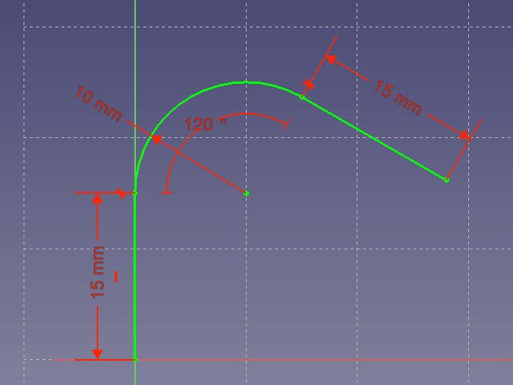
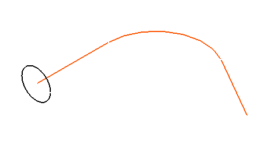
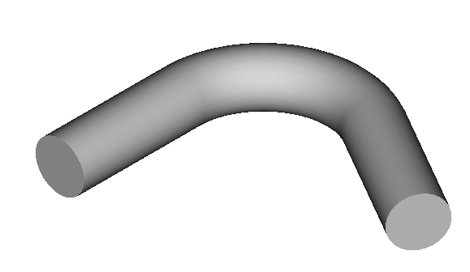
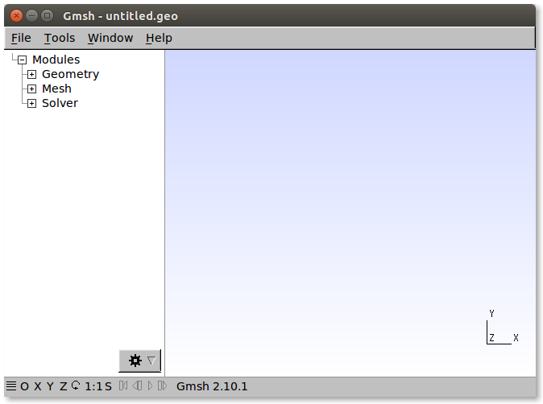
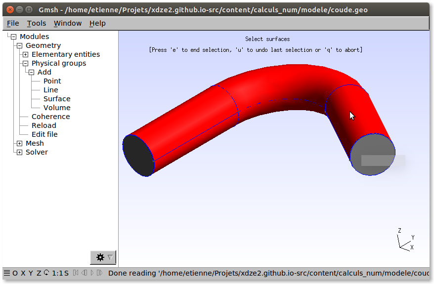
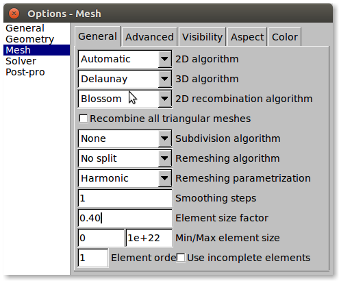
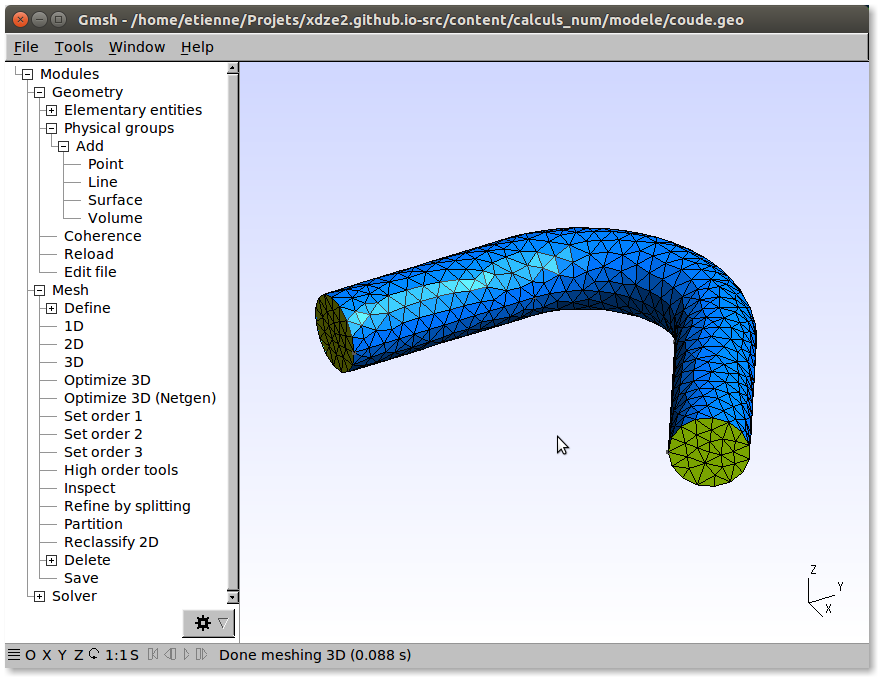
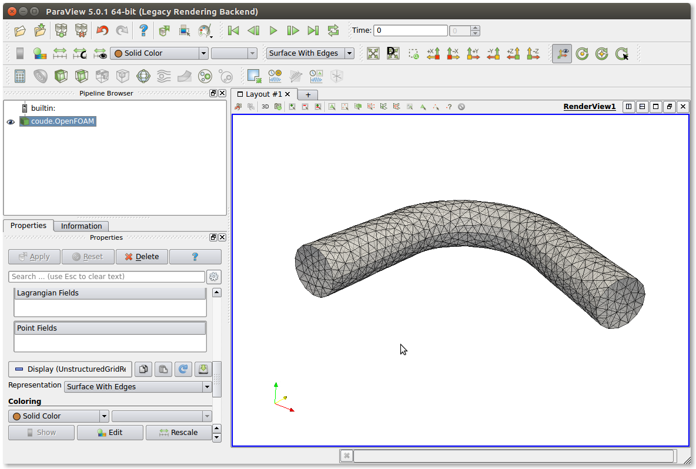

De FreeCad à OpenFoam
Ceci est le début d'un projet pour utiliser l'environement de calcul CFD libre: OpenFoam (doc).
Dans cette première partie, nous allons voir comment créer une géométrie -modèle 3D- avec FreeCad, puis créer un maillage sur cette géométrie avec Gmesh. Et enfin comment importer le maillage dans OpenFoam.
Les opérations sont:
- Création de la géométrie avec FreeCad
- Transfert dans Gmsh
- Définition des groupes de surfaces (physical elements), pour les futurs conditions aux limites.
- Génération du maillage
- Transfert dans OpenFoam, en récupérant les labels des surfaces
La principale inspiration est la vidéo FreeCAD, Gmsh, OpenFoam - an opensource CFD case.
FreeCad
On commence par créer une géométrie simple, un tuyau coudé, avec la fonction de balayage (part sweep).
Il y a deux esquisses. L'une est le chemin de balayage :

et l'autre, dans un plan perpendiculaire, est la section du tube que l'on souhaite créer.
Vue 3d des esquisses : 
Ce qui donne au final ce volume: 
Le modèle est ensuite exporté (Pièce/Exportation CAO...) au format STEP (Standard for the Exchange of Product model data, format ISO-10303). C'est un fichier texte lissible.
Rq: On peut, à priori, définir l'unité des dimensions pour l'export au format STEP dans les paramètres de FreeCad (Edition/Préférences/Import-Export/STEP). Ici en millimètre.
La suite se passe avec Gmsh. C'est un logiciel libre de maillage.
Gmsh
L'interface se présente comme ceci avec un menu hierachique des actions possible à gauche:

File/Open... permet d'ouvrir le fichier STEP.
La première chose à faire est de définir les 'Physical groups'. Ceci correspond à assigner un label pour chaque surfaces et volumes permettant ensuite de les retrouver dans OpenFoam.
Dans l'arborescence du menu à gauche, on trouve l'action ADD - Surface. Il est aussi important de créer un volume.

Pour la création du maillage, le paramètre le plus important est la taille des élements crées.
C'est le paramètre Element size factor dans l'onglet Mesh-General de la boite Tool/Options :

Il faut ensuite cliquer succesivement sur 1D, 2D et 3D, dans le menu Mesh-Define, pour créer le maillage.
En jouant sur les paramètres de visibilité et de couleur, on obtient la vue suivante (voir): 
Il reste à enregistrer le maillage: File/Save Mesh. Un fichier .msh est créé. Lui aussi est lissible avec un editeur de texte. C'est la liste de tout les points du maillage et des élements. L'information des 'Physical groups' est indiquée dans la définition des éléments (spec., man page), dans la 4ième colonne :
$Elements
4682
1 2 2 9 1 271 10 11
2 2 2 9 1 196 11 10
3 2 2 9 1 214 10 271
4 2 2 9 1 10 9 179
5 2 2 9 1 9 10 214
6 2 2 9 1 245 10 179
7 2 2 9 1 196 10 245
...etc
Un fichier .geo est aussi créé, correspondant simplement aux commandes effectuées, sans le maillage:
Merge "coude.step";
Physical Surface(8) = {4};
Physical Surface(9) = {1, 2, 3};
Physical Surface(10) = {5};
Physical Volume(11) = {1};
Rq: il doit être possible de créer un maillage bien plus joli, avec une extrusion par exemple... (bifurcation mesh)
OpenFoam
La doc du programme gmshToFoam est plutôt succincte.
Il faut travailler dans le repertoire d'un projet existant. La façon la plus simple est de copier un cas d'exemple.
$ ls $FOAM_TUTORIALS/incompressible/
En partant de l'exemple cavity (tuto):
$ cp -r $FOAM_TUTORIALS/incompressible/icoFoam/cavity/cavity .
Le fichier de maillage est ensuite copier à la racine du répertoire du projet. Puis le programme de conversion est exécuté, avec en paramètre le fichier du maillage :
$ gmshToFoam coude.msh
La correspondance entre les 'physical groups' et les patchs de OpenFoam est rendue par gmshToFoam:
[...]
Mapping region 9 to Foam patch 0
Mapping region 8 to Foam patch 1
Mapping region 10 to Foam patch 2
Mapping region 11 to Foam cellZone 0
[...]
Le maillage est créé dans le repertoire constant/polyMesh.
Dans notre cas: region 8 -> inlet, region 9 -> tube, region 10 -> outlet. On peut donc renomer les patchs dans le fichier constant/polyMesh/boundary.
Les valeurs physiques correspondantes aux conditions aux limites sont spécifiées dans les fichiers 0/U et 0/P.
Le logiciel paraview permet d'afficher le maillage:
$ paraFoam

On peut vérifier le maillage:
$ checkMesh
Et aussi changer son échelle (par exemple de millimètre à mètre) (doc.):
$ transformPoints -scale '(1e-3 1e-3 1e-3)'
la suite
La suite est de paramétrer le solveur et d'effectuer le calcul.